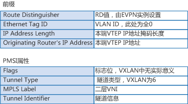

第八章 BGP EVPN
1. EVPN介绍¶
最初的VXLAN方案（RFC7348）中没有定义控制平面，是手工配置VXLAN隧道，然后通过流量泛洪的方式进行主机地址的学习。这种方式实现上较为简单，但是会导致网络中存在很多泛洪流量、网络扩展起来困难。
为了解决上述问题，VXLAN引入了EVPN（Ethernet VPN）作为VXLAN的控制平面。EVPN参考了BGP/MPLS IP VPN的机制，通过扩展BGP协议新定义了几种BGP EVPN路由，通过在网络中发布路由来实现VTEP的自动发现、主机地址学习。
采用EVPN作为控制平面具有以下一些优势：
- 可实现VTEP自动发现、VXLAN隧道自动建立，从而降低网络部署、扩展的难度。
- EVPN可以同时发布二层MAC和三层路由信息。
- 可以减少网络中泛洪流量。
2. BGP EVPN路由类型¶
传统的BGP-4使用Update报文在对等体之间交换路由信息。一条Update报文可以通告一类具有相同路径属性的可达路由，这些路由放在NLRI（Network Layer Reachable Information，网络层可达信息）字段中。
因为BGP-4只能管理IPv4单播路由信息，为了提供对多种网络层协议的支持（例如IPv6、组播），发展出了MP-BGP（MultiProtocol BGP）。MP-BGP在BGP-4基础上对NLRI作了新扩展。玄机就在于新扩展的NLRI上，扩展之后的NLRI增加了地址族的描述，可以用来区分不同的网络层协议，例如IPv6单播地址族、VPN实例地址族等。
类似的，EVPN在L2VPN地址族下定义了新的子地址族——EVPN地址族，并新增了一种NLRI，即EVPN NLRI。EVPN NLRI定义了以下几种BGP EVPN路由类型，通过在EVPN对等体之间发布这些路由，就可以实现VXLAN隧道的自动建立、主机地址的学习。
- Type2路由——MAC/IP路由：用来通告主机MAC地址、主机ARP和主机路由信息。
- Type3路由——Inclusive Multicast路由：用于VTEP的自动发现和VXLAN隧道的动态建立。
- Type5路由——IP前缀路由：用于通告引入的外部路由，也可以通告主机路由信息。
EVPN路由在发布时，会携带RD（Route Distinguisher，路由标识符）和VPN Target（也称为Route Target）。RD用来区分不同的VXLAN EVPN路由。VPN Target是一种BGP扩展团体属性，用于控制EVPN路由的发布与接收。也就是说，VPN Target定义了本端的EVPN路由可以被哪些对端所接收，以及本端是否接收对端发来的EVPN路由。
VPN Target属性分为两类：
- ERT（Export Route Target）：本端发送EVPN路由时，将消息中携带的VPN Target属性设置为ERT。
- IRT（Import Route Target）：本端在接收到对端的EVPN路由时，将消息中携带的ERT与本端的IRT进行比较，只有两者相等时才接收该路由，否则丢弃该路由。
3. Type2类型路由¶
Type2类型路由中NLRI格式如下：
{kind=link}
由[图8-1]可以看出，Type2类型路由中携带有主机MAC、主机IP信息，因此Type2类型路由可以用于发布主机MAC，还可以发布主机IP地址。
{kind=link}
如[图8-2]所示，Leaf1接收到Host1发送的报文后，会学习到Host1的MAC地址。Leaf1学习到Host1的MAC后，会生成Type2类型的路由发送给Leaf2，该路由会携带EVPN实例的ERT、Host1的MAC地址、Leaf1的VTEP IP等信息。
Leaf2收到Leaf1发送来的路由后，根据路由中的ERT是否与本端EVPN实例的IRT相同来决定是否接收该路由。如果相同，则接收该路由，Leaf2可以学习到Host1的MAC地址；如果不同，则丢弃路由。
4. Type3类型路由¶
Type3类型路由中NLRI格式如下：
图8-3 Type3类型路由中NLRI格式

{kind=link}
Type3类型路由中主要携带有VTEP IP信息，主要用于VTEP的自动发现和VXLAN隧道的动态建立。
{kind=link}
如[图8-4]所示，在Leaf1和Leaf2之间建立BGP EVPN对等体后，Leaf1会生成Type3类型的路由发送给Leaf2。该路由中会携带本端VTEP IP地址、VNI、EVPN实例的ERT等信息。
Leaf2收到Leaf1发送来的路由后，根据路由中的ERT是否与本端EVPN实例的IRT相同来决定是否接收该路由。如果相同，则接收该路由，建立一条到对端的VXLAN隧道。同时，如果对端VNI与本端相同，则创建一个头端复制表，用于后续广播、组播、未知单播报文的转发。
5. Type5类型路由¶
Type5类型路由中NLRI格式如下：
{kind=link}
Type5类型路由携带路由信息，主要用于发布路由。与Type2类型路由不同的是，Type5类型路由既可以发布32位主机路由，也可以发布网段路由。
{kind=link}
Type5类型路由可以将本地其他协议的私网路由（例如静态路由、直连路由、其他路由协议路由）发布到其他EVPN网络中，在远端生成相应的主机/网段路由。所以Type5类型路由可以实现VXLAN网络主机访问外部非VXLAN网络。
6. BGP EVPN实现DCI互联¶
通过BGP EVPN在两个数据中心内部各建立一段VXLAN隧道，数据中心之间再建立一段VXLAN隧道，可以实现数据中心互联。如图图8-7所示，分别在数据中心A、数据中心B内配置BGP EVPN协议创建分布式网关VXLAN隧道，实现各数据中心内部VM之间的通信。Leaf2和Leaf3是数据中心内连接骨干网的边缘设备，通过在Leaf2和Leaf3上配置BGP EVPN协议创建VXLAN隧道，将从一侧数据中心收到的VXLAN报文先解封装、然后再重新封装后发送到另一侧数据中心，实现对跨数据中心的报文端到端的VXLAN报文承载，保证跨数据中心VM之间的通信。
{kind=link}
7. 本章小结¶
EVPN是基于BGP协议的技术，需要部署在网络交换机上。这意味着网络交换机需要作为VTEP节点，进行VXLAN封装。服务器通过接口或VLAN接入网络交换机。这些接口或VLAN会映射到对应的广播域BD，同时BD也会绑定一个EVPN实例，通过EVPN实例间路由的传递实现VXLAN隧道的建立、MAC学习。